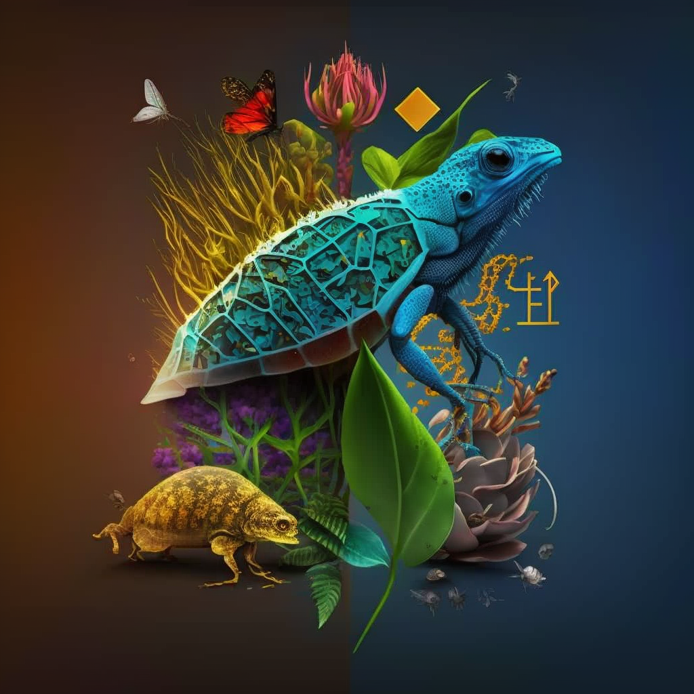

Introduction of Biodiversity
“Biological diversity means the variability among living organisms from all sources including,
inter alia, terrestrial, marine and other aquatic ecosystems and the ecological complexes of
which they are part; this includes biological diversity within species and ecosystems”.
OR - Biodiversity may be defined as the sum total of species richness, i.e., the number of
species of plants, animals and microorganisms occurring in a given region, country, continent
of the entire globe.
Importance of Biodiversity
Conservation of biodiversity implies sustaining the diversity in the ecosystem. Speaking of today’s context, the pace at which several species are on the verge of extinction is quite alarming. With the loss of several species, the ecosystem balance is hindered hence all the species on earth are interconnected to each other in every other way. Hence, the loss of one species poses as a threat to the existence of another species. The products and services obtained from the floral and faunal species across the world are numerous. The removal of natural vegetation for development is putting stress on ecosystems.
It is important for preserving the diversity of species.
It also helps in sustainable management and utilization of species and ecosystems.
Biodiversity conservation is critically important for economic development and for poverty alleviation.
As the agriculture sector is highly dependent on biological diversity, its loss would lead to decreased agricultural production.
